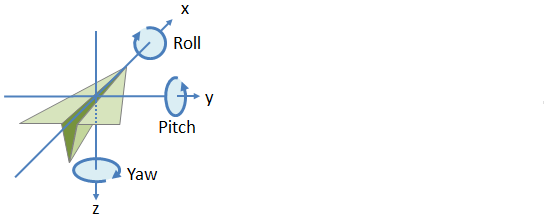
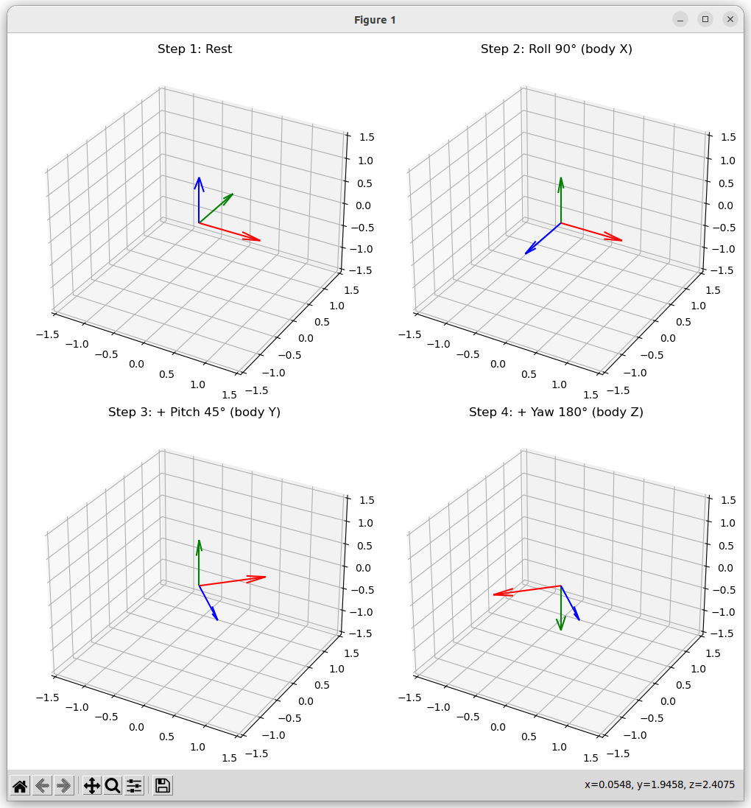
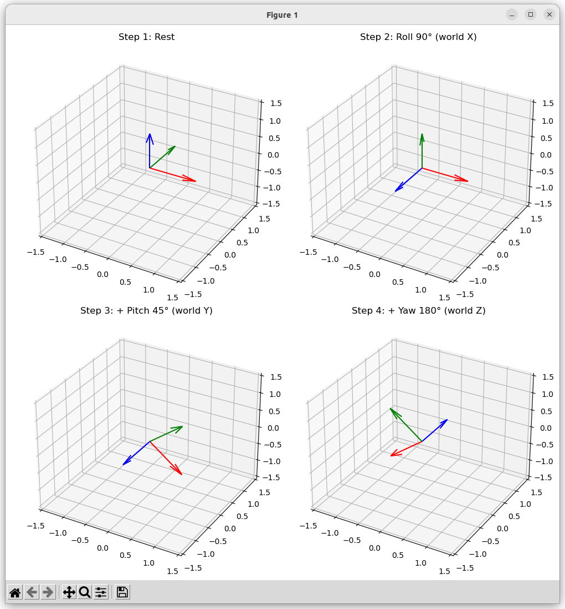
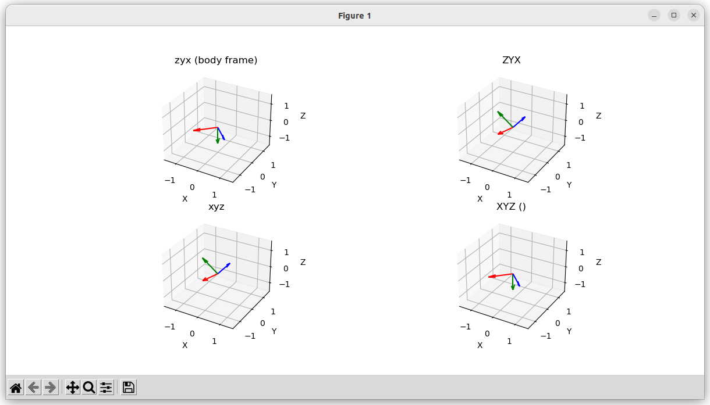

Coordinate systems
Tait–Bryan
Tait–Bryan angles are a way to describe orientation in 3D space using three rotations about three different axes.

- Roll (φ) → rotation about the X-axis
- Pitch (θ) → rotation about the Y-axis
- Yaw (ψ) → rotation about the Z-axis
Intrinsic and Extrinsic
- Intrinsic: The rotation relative to current body axes , it's use in robotics and ROS
- Extrinsic: The rotation always relative to the fixed world axes
Intrinsic
rotations are about the body axes. \(\(R_{\text{intrinsic}} = R_z(\text{yaw}) \cdot R_y(\text{pitch}) \cdot R_x(\text{roll})\)\)
code

Extrinsic
rotations are about the fixed world axes.
\[R_{\text{extrinsic}} = R_x(\text{roll}) \cdot R_y(\text{pitch}) \cdot R_z(\text{yaw})\]
code

Rotate using scipy
- Lowercase ("xyz") = intrinsic (body-fixed).
- Uppercase ("XYZ") = extrinsic (world-fixed).
code

| Intrinsic (body axes, lowercase) | Equivalent Extrinsic (world axes, uppercase reversed) |
|---|---|
"xyz" → roll-pitch-yaw (body x→y→z) |
"ZYX" → yaw-pitch-roll (world z→y→x) |
"xzy" |
"YZX" |
"yxz" |
"ZXY" |
"yzx" |
"XZY" |
"zxy" |
"YXZ" |
"zyx" |
"XYZ" |